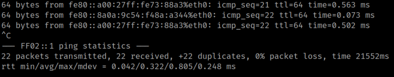
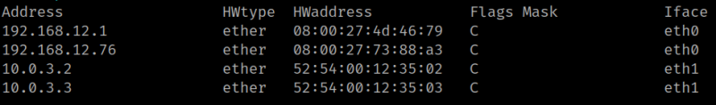

4.2 PIng6, ARP and ip
Ping6
May be the victim's machine is using IPv6, so enumerate the
"All IPv6 nodes on the link local".
1. Enumerate links.(The ipv6 address FF02::1 is a special address (multicast))
$ ping6 FF02::1
Output:

ARP
ARP (Address Resolution Protocol) is a network protocol used to find out the hardware (MAC) address of a device from an IP address. It is used when a device wants to communicate with some other device on a local network (for example on an Ethernet network that requires physical addresses to be known before sending packets). The sending device uses ARP to translate IP addresses to MAC addresses. The device sends an ARP request message containing the IP address of the receiving device. All devices on a local network segment see the message, but only the device that has that IP address responds with the ARP reply message containing its MAC address. The sending device now has enough information to send the packet to the receiving device.
1. Run on your Kali Machine the followng command.
$ arp -e

You can see the 192.168.12.76's MAC.
ip neighbour—neighbour/ARP Table Management
The neighbour table objects establish bindings between protocol addresses and link layer addresses for hosts sharing the same physical link. neighbour object entries are organized into tables. The IPv4 neighbour object table is also known as the ARP table. These commands allow you to look at the neighbour table bindings and their properties, to add new neighbour table entries, and to delete old ones.
Abbreviations: neighbour, neighbor, neigh, n
1. Run on your Kali Machine the followng command.
$ ip -6 neigh
Output: